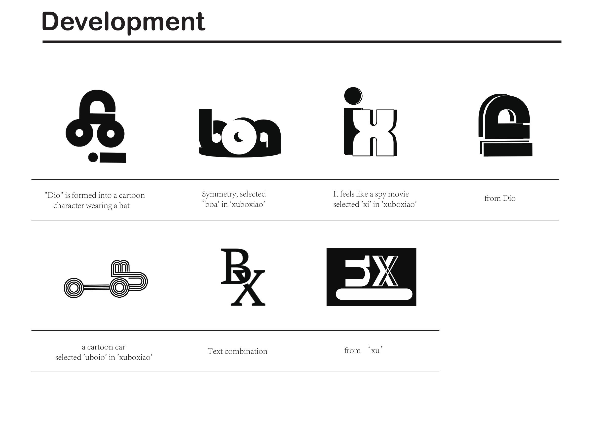
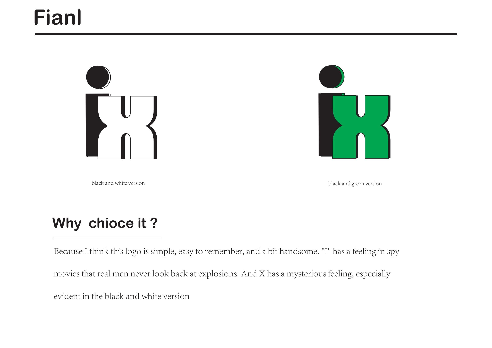

BOXIAO XU · 许博骁
Home / 首页
Products / 产品
Frontend / 前端
Backend / 后端
Posters / 海报
Films / 视频
GitHub ↗
SELECTED WORK · BOXIAO XU
Personal Visual Identity
个人视觉标志
Selected coursework from Year 2 onward. / 大二及之后的课程作品。

